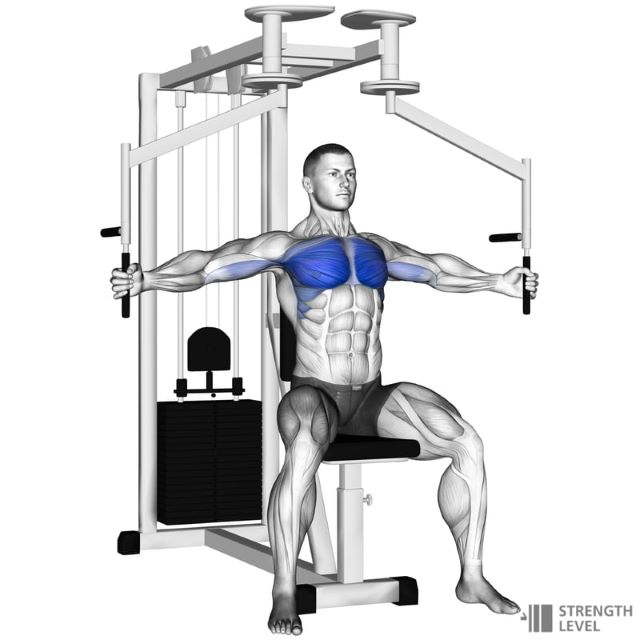
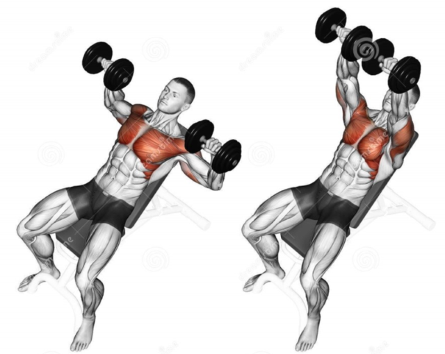
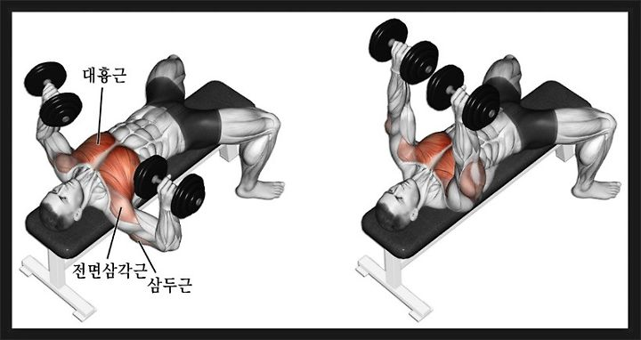
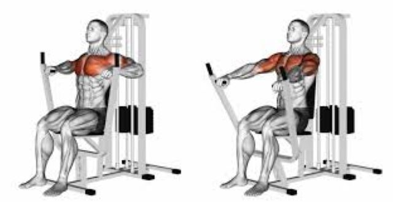
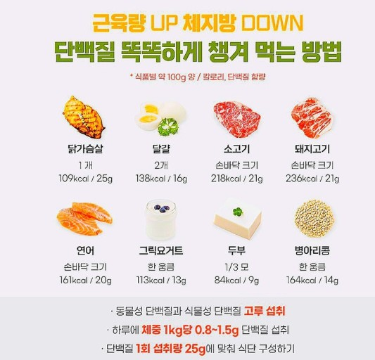
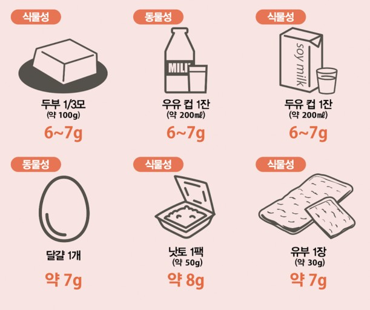

아무이유없는 사진
강아지 귀여움.
운동 루틴
가슴운동
- 펙 덱 머신 플라이 : 웜 업 및 혈류량 증가

- 인클라인 덤밸 프레스 : 윗 가슴 타격

- 플랫 덤밸 프레스 : 중부 가슴 타격

- 체스트 프레스 : 가슴 전반 볼륨

등운동
하체운동
식단


세계보건 기구(WHO)에서는 일반인을 기준으로 체중 1kg당 0.8로 권장하고 있습니다.
예를 들어 70kg인 사람의 경우 56g을 섭취하면 됩니다. 이에 맞는 계량컵을 준비하여 그에 적절한 습관대로 단백질을 섭취하면 많은 효과가 보일 것입니다.